One of the main devices one can use to make sense of impulse
responses is visualization. In impulseR, visualization is
achieved through the irf_plot function, to which you
provide the results of the irf_generator or
irf_empirical functions:
# Compute impulse responses
results <- irf_generator(
intercept = 1,
x_params = c(1, 0.5),
ar_params = c(0.75, -0.25),
x = impulse(10, 1),
innovations = scaled_impulse(10, 1, -1)
)$irf
# Plot the results
irf_plot(results)![One sees four lines; (a) A horizontal gray line that describes the intercept, (b) a red solid line initially increases and then decreases exponentially to reach $y = 0$, describing the reaction of the system to the impulse from the covariate, (c) a green solid line that starts out at point (0, -1) and then increases exponentially to reach $y = 0$, describing the reaction of the system to the impulse from the innovations, and (d) a black dashed line that describes the total response of the system. Additionally, there are two vertical lines and two points that represent the impulse of the covariate and the impulse of the residual. Importantly, the black line can be obtained through summing the gray, red, and green lines.](plotting_files/figure-html/unnamed-chunk-2-1.png)
Visualization of an impulse response function for an ADL(2, 2) with parameters , , and . Impulses consist of a singular unit impulse in the covariate (positive) and the innovations (negative) at the start of the simulation.
To interpret this figure, it is important to note that the total impulse response (the black line) is composed of the sum of the intercept response (the gray line), the response to the exogeneous variable (the red line), and the response to the residual impulse (the green line). This figure thus neatly displays how an observed response may be composed of several separate parts, easing interpretation of the model’s predictions somewhat.
Because visualization is such an important aspect of interpretation,
the irf_plot function allows users to customize their
figures, making them potentially easier to understand. This is what we
will discuss in this section.
Changing content
Imagine a model in which you do not specify the
ar_params, but only some lagged effects of the covariates
x. Plotting the results of such a model gets you the
following result:
# Compute impulse responses
results <- irf_generator(
intercept = 1,
x_params = c(1, 0.5),
x = impulse(10, 1)
)$irf
# Plot the results
irf_plot(results)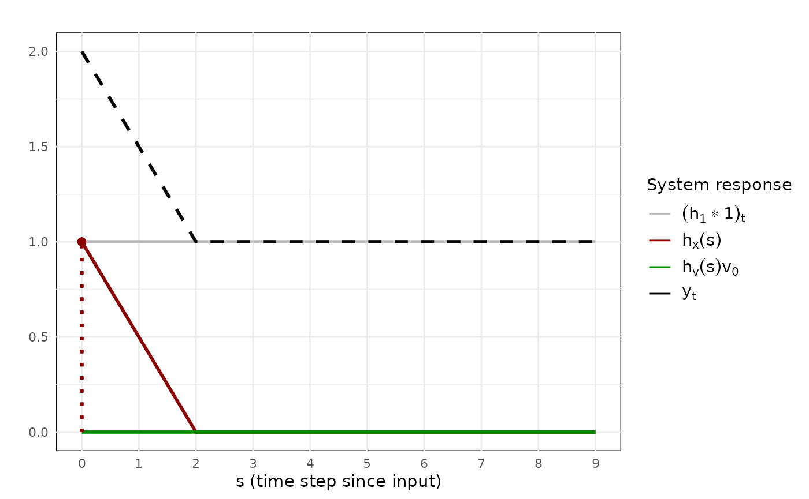
Visualization of an impulse response function for a linear regression with parameters , , and . A single unit impulse is given by the covariate at time .
As one can see, the plot includes a green line at 0, indicating that the impulse from the innovations amount to nothing or does not play a role in the total response. This information may not seem relevant for the current model and the specified impulse, both of which do not include these innovations. Hence, one may want to leave the impulse response of the innovations (the green line) out of the figure.
To do this, one can specify the cols argument, which
takes in a character vector of the column names in results
that one wants to account for. In our case, we want to leave
irf_v out of the figure, so we specify:
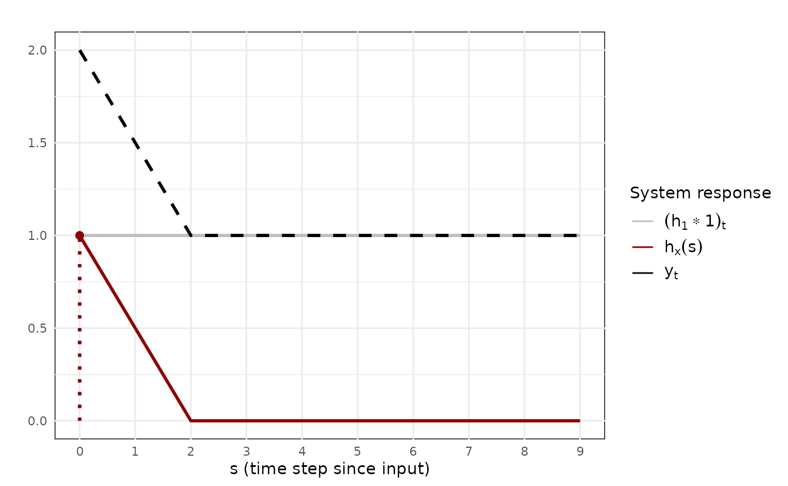
Visualization of the same impulse response function as before, but without including the impulse of the innovations.
Of course, we can also leave out the intercept and total impulse
response if we want to, only retaining the response to the covariate
x:
irf_plot(
results,
cols = "irf_x"
)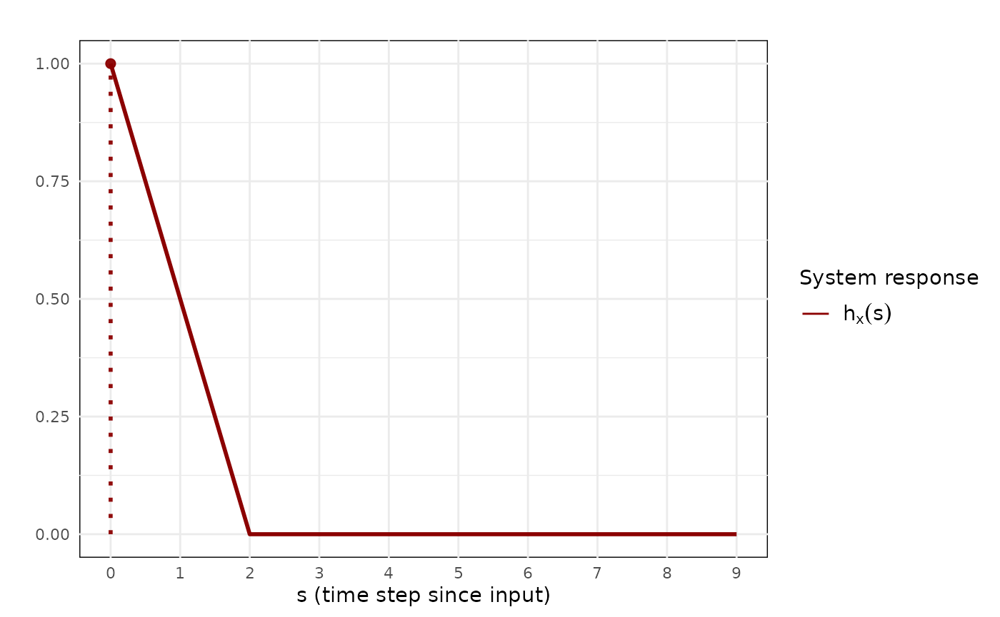
Visualization of the same impulse response function as before, but only including the impulse response for the covariate.
Through the specification of cols, one can thus control
which impulse responses to visualize.
Changing lines
The main subject of the figures are the lines that display the total
response, the covariate-related response, the residual-related response,
and the intercept-related response to the impulses that are provided to
the system. Some aspects of these lines are modifiable, specifically
their color, linewidth, and
linetype. These aspects can be changed for all four
responses separately through adding the prefix irf.,
x., v., and intercept..
To see the effect of the arguments, consider the impulse responses derived from an ADL(2, 2) again:
results <- irf_generator(
intercept = 1,
x_params = c(1, 0.5),
ar_params = c(0.75, -0.25),
x = impulse(10, 1),
innovations = scaled_impulse(10, 1, -1)
)$irfChanging the colors of the different components, we run the following code:
irf_plot(
results,
irf.color = "cornflowerblue",
x.color = "salmon",
v.color = "darkolivegreen",
intercept.color = "black"
)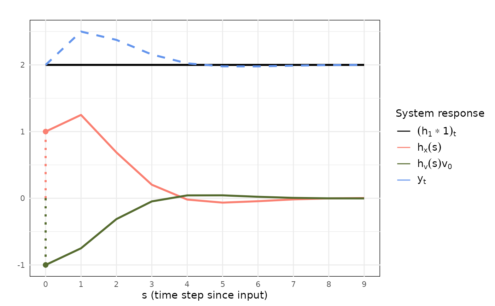
Visualization of the impulse response function for the previously defined ADL(2, 2) and impulses with a change in the color scheme.
Changing the linewidths can be achieved through the following code:
irf_plot(
results,
irf.linewidth = 3,
x.linewidth = 1,
v.linewidth = 2,
intercept.linewidth = 0.5
)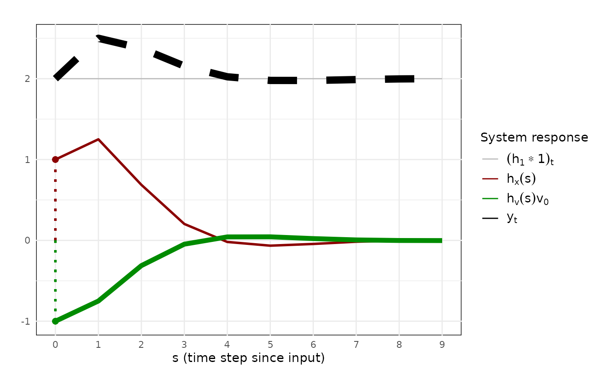
Visualization of the impulse response function for the previously defined ADL(2, 2) and impulses with a change in the linewidth.
Finally, we change the linetype through the following code:
irf_plot(
results,
irf.linetype = "solid",
x.linetype = "dashed",
v.linetype = "dotted",
intercept.linetype = "solid"
)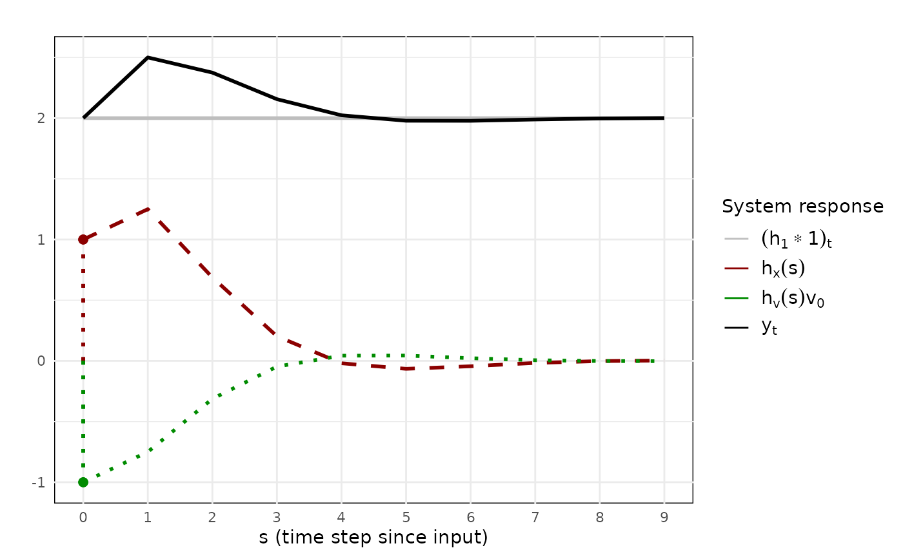
Visualization of the impulse response function for the previously defined ADL(2, 2) and impulses with a change in the linetype.
Of course, we can modify all of these arguments at the same time. Using the previous argument values, we then get the following result:
irf_plot(
results,
# Changes for the total response
irf.color = "cornflowerblue",
irf.linewidth = 3,
irf.linetype = "solid",
# Changes for the covariate-related response
x.color = "salmon",
x.linewidth = 1,
x.linetype = "dashed",
# Changes for the residual-related response
v.color = "darkolivegreen",
v.linewidth = 2,
v.linetype = "dotted",
# Changes for the intercept
intercept.color = "black",
intercept.linewidth = 0.5,
intercept.linetype = "solid"
)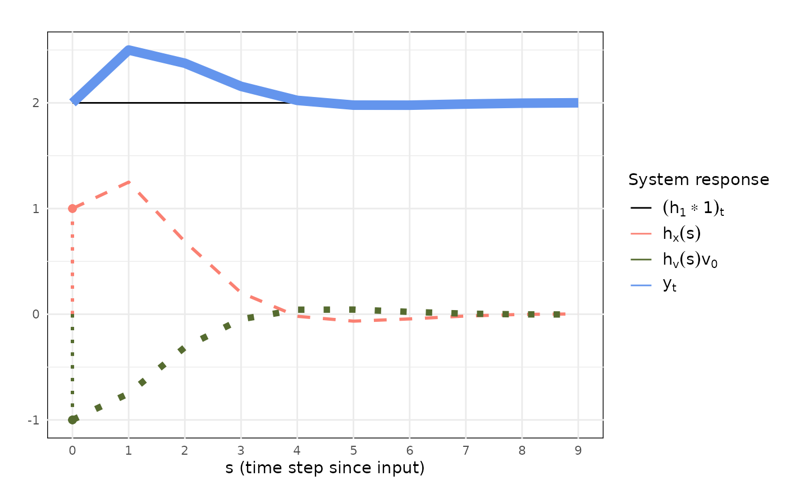
Visualization of the impulse response function for the previously defined ADL(2, 2) and impulses with a change in the color, linewidth, and linetype.
Changing impulses
Another key component in the figures are the impulses, that is the
vertical lines and points that show at what time an impulse is given
through the covariates and/or the innovations. While they receive their
colors through the x.color and v.color
arguments, you can still influence their opacity, the linetype and
linewidth of the vertical line, and the shape and size of the points
that show the value of the impulse.
Focusing on opacity first, one can control the opacity of the
impulses through the impulse.alpha argument:
irf_plot(
results,
impulse.alpha = 0.15
)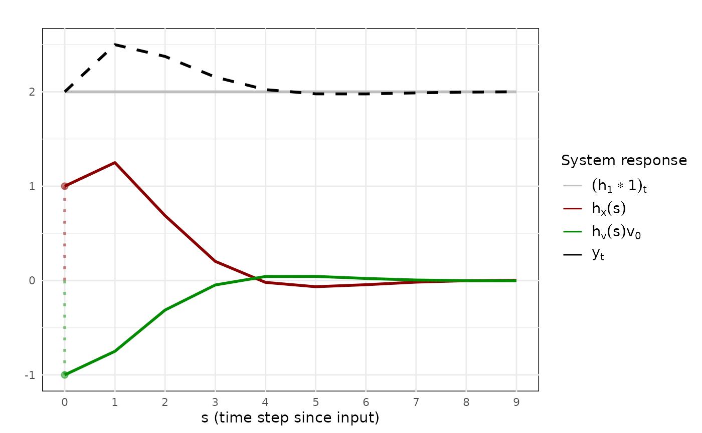
Visualization of the impulse response function for the previously defined ADL(2, 2) and impulses with a change in opacity for the impulses, making them barely visible.
The linetype and linewidth of the vertical line can be controlled
through the impulse.linetype and
impulse.linewidth arguments:
irf_plot(
results,
impulse.linetype = "solid",
impulse.linewidth = 0.5
)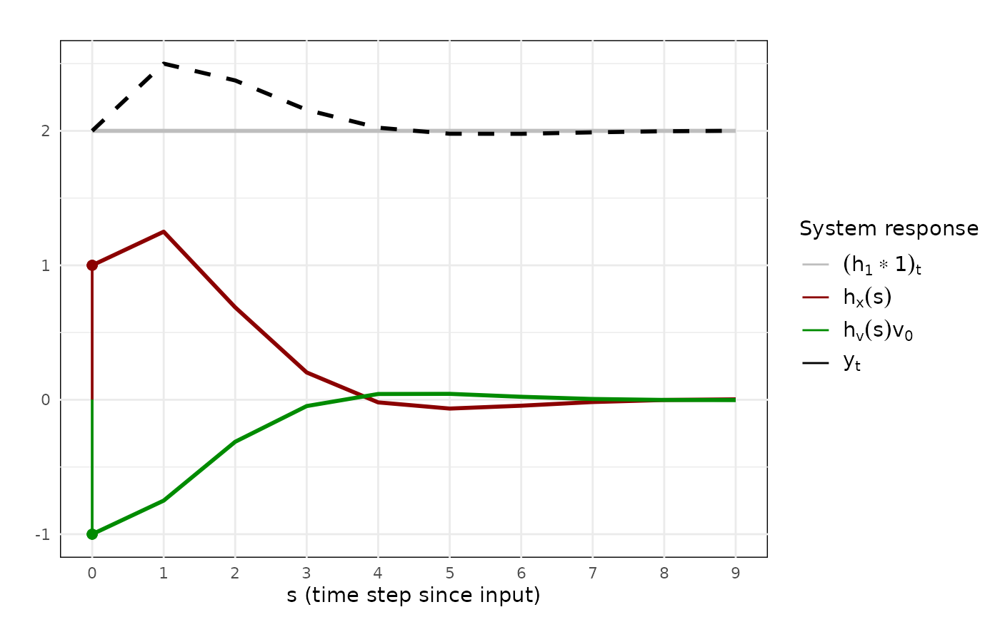
Visualization of the impulse response function for the previously defined ADL(2, 2) and impulses with a change in linetype and linewidth for the impulses.
Finally, shape and size of the points can be controlled through the
impulse.shape and impulse.size arguments.
irf_plot(
results,
impulse.shape = 17,
impulse.size = 4
)Visualization of the impulse response function for the previously defined ADL(2, 2) and impulses with a change in shape and size of the impulses.
Note that the shape of the covariate- and residual-impulses can be
controlled separately if wanted. For this, one uses the
impulse.x.shape and impulse.v.shape
arguments:
irf_plot(
results,
impulse.size = 4,
impulse.x.shape = 15,
impulse.v.shape = 17
)Visualization of the impulse response function for the previously defined ADL(2, 2) and impulses with a change in shape and size of the impulses. Shapes of the impulses are specific to the impulse type itself, that is different for the covariates vs the innovations.
If one or both are left unspecified, then they will default to the
value given to impulse.shape (by default
19).
Changing titles and labels
Currently, the plots information is mostly technical, containing the
mathematical impulse response functions in the legend and the time step
notation used in the accompanying paper on the x-axis. This information
is, however, customizable. Specifically, one can provide their own
titles for the plot and the axes through the title,
xlabel, and ylabel arguments:
irf_plot(
results,
title = "My impulse response",
ylabel = "Response value",
xlabel = "Time"
)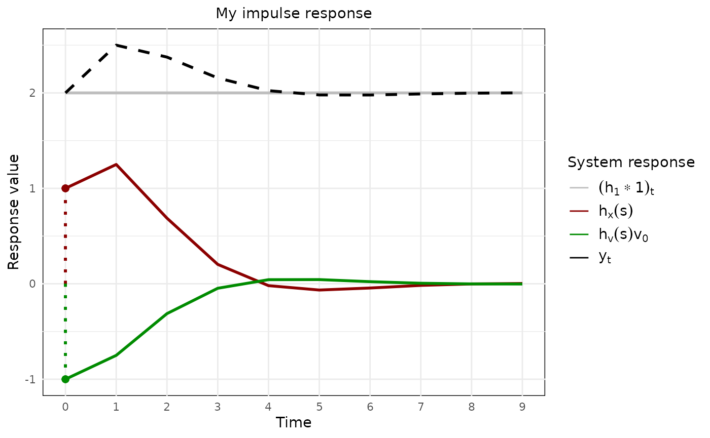
Visualization of the impulse response function for the previously defined ADL(2, 2) and impulses, but this time provided by some helpful titles and labels.
Text can also be provided for the legend, where the title can be
changed through legend.title and the labels of the total
response, the covariate-related response, the residual-related response,
and the intercept-related response can be provided through the arguments
irf.label, x.label, v.label, and
intercept.label. For example:
irf_plot(
results,
legend.title = "Impulse components",
irf.label = "Total",
x.label = "Covariate",
v.label = "Residual",
intercept.label = "Intercept"
)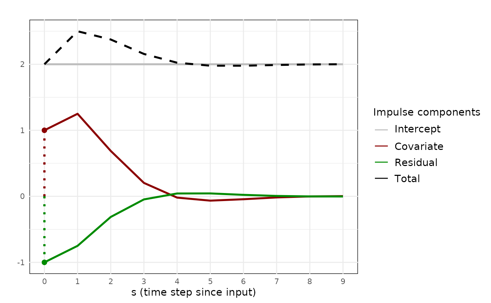
Visualization of the impulse response function for the previously defined ADL(2, 2) and impulses, but with some helpful titles and labels in the legend.
To increase readability of the plots, we also allow users to change
the size of each of the labels through the title.size,
label.size, axis.text.size,
legend.title.size, and legend.text.size for
the title, axis titles, axis text, legend title, and legend text
respectively. For the title, we additionally allow users to specify the
justification through the title.hjust argument. Changing
all values with the previously provided labels, we get:
irf_plot(
results,
# Labels
title = "My impulse response",
ylabel = "Response value",
xlabel = "Time",
legend.title = "Impulse components",
irf.label = "Total",
x.label = "Covariate",
v.label = "Residual",
intercept.label = "Intercept",
# Sizes and justification
title.size = ggplot2::rel(2.5),
title.hjust = 1,
label.size = ggplot2::rel(1.5),
axis.text.size = ggplot2::rel(0.5),
legend.title.size = ggplot2::rel(2),
legend.text.size = ggplot2::rel(1.8)
)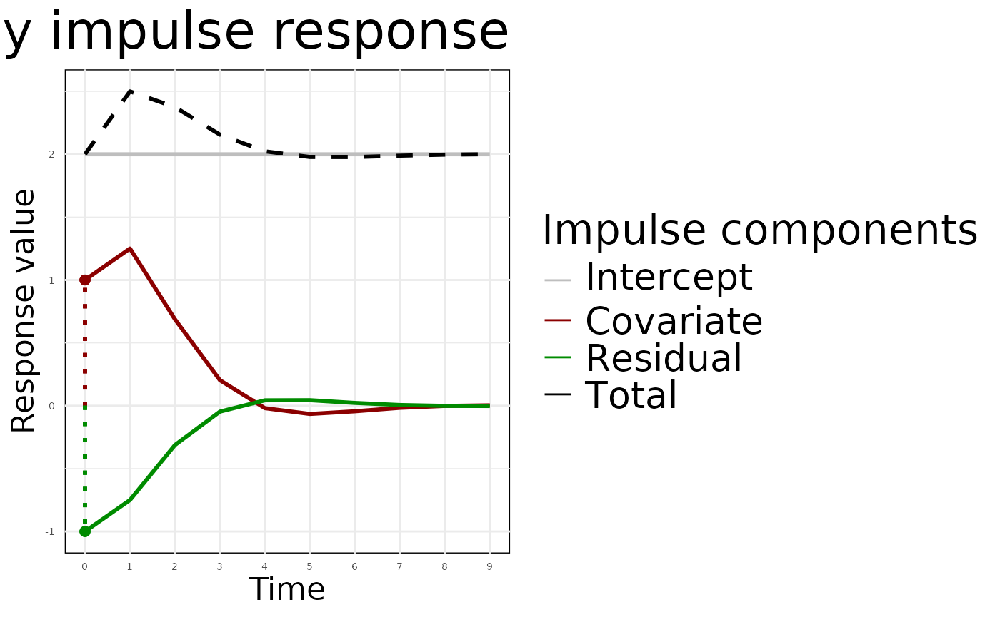
Visualization of the impulse response function for the previously defined ADL(2, 2) and impulses, but with some helpful titles and labels in the overall plot. Additionally, the sizes of these labels have been adjusted.
Note that while we use the ggplot2::rel function in our
example, one can also provide raw integer values to these arguments.